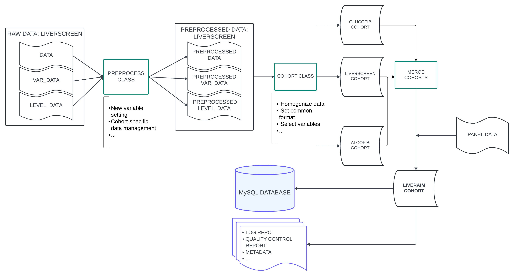

Overview¶
hola oscar
Dataflow¶
This section describes the data flow and ETL process, from the data reading to data export in various formats.
The data processing follows these steps, which are explained in detail in this document:
- Data Reading: Reading of all data required for the creation of the data warehouse. Specifically, the files described in initial_data_configuration are read.
- Data Preprocessing: An initial transformation of the data is performed, where some variables are added and combined. This process allows each cohort to be treated individually and specific changes to be applied to that cohort.
- Cohort Instantiation and Processing: For each cohort, a
Cohortobject is created. This centralizes the formatting and homogenization of the cohorts to produce a curated database with a consistent format across all cohorts. - Cohort Quality Control: Quality control is performed for each cohort to validate the transformations carried out in the previous steps.
- Cohort Merging: Once the different cohorts with homogenized data have been created, they are merged into a new
Cohortobject (namedliveraim). Two important actions are performed in this cohort:- The variable
liveraim_idis added, a common format identifier. - The different panels (in
DataFrameformat) that will later be exported are created.
- The variable
- Exportation to Files: The created panels are exported as
.featherand.csvfiles for further analysis. - Exportation to MySQL Database: A connection is made to MySQL, where the various tables and relationships of the schema are created, and the data is exported to SQL format.
The following image describes schematically the ETL process:

Data Reading¶
Data reading is handled through the DataReader class. This class is responsible for reading the following files for each cohort:
var_data (.xlsx): A .xlsx file that is loaded into the code as aDataFrame.level_data (.xlsx): A .xlsx file that is loaded into the code as aDataFrame.comb_var_data (.json): A .json file that is loaded into the code as a dictionary.databases (variable): For each cohort, there will be one or more versions of the database.DataReaderreads each version in its respective format (.dta,.sav, ...) and loads them into the code aspandasDataFrames. These dataframes are stored in a dictionary where the key is the version name (i.e., the date when the DB version was received) and the value is the DataFrame containing the database.
Additionally, it reads the data related to the final structure of the panels. This is stored in the panel_metadata (.xlsx) file. Since this is a .xlsx file with multiple sheets, it is loaded into the code as a dictionary where the key is the sheet name (i.e., the name of the panel) and the value is a DataFrame with the content of the sheet.
These data are stored in the DataReader.all_data attribute, a dictionary with the following structure:
all_data:
<cohort_name_1>: # Name of the cohort
data: <database_versions_dictionary> # Dictionary containing each database version
var_data: <var_data_file> # Excel file containing var_data
level_data: <level_data_file> # File containing level_data
comb_var_data: <comb_var_data_file> # File containing comb_var_data
<cohort_name_2>: # Name of the next cohort
data: <database_versions_dictionary> # Dictionary containing each database version
var_data: <var_data_file> # Excel file containing var_data
level_data: <level_data_file> # File containing level_data
comb_var_data: <comb_var_data_file> # File containing comb_var_data
...
panel_data: <panel_data_file> # Dictionary with panel_data information
Note: The data warehouse will be created using all versions of the databases, up to the most recent one. This allows for more detailed tracking of patients who have entered and exited in each version. How the different versions are managed is explained in the next section, Data Preprocessing.
These files are essential for the correct processing of the data. To see the structure of these files, refer to the section initial_data_configuration.
The variables that store the filenames to be read, as well as the directories where these files are located, are defined in the module main_config.
Refer to data_reading_utils for more details on the internal workings of DataReader and the data reading process.
Data Preprocessing¶
Once the initial data is loaded, an instance of the DataPreprocessor class is created for each cohort. This instance takes as parameters all the elements from all_data[cohort_name], as well as the name of the respective cohort. This data is stored in the atributes cohort_databases, vara_data, level_data, var_comb_data and cohort_name respectively.
DataPreprocessor performs the following actions:
The aim of this class is to prepare the data from each cohort for the formatting and homogenization process, which requires a specific structure. This class is designed to handle each cohort individually and allows for specific adjustments to be made for each cohort, adapting to the particularities of each one.
Merging database versions¶
The dictionary containing the cohort database versions is stored in the attribute DataPreprocessor.cohort_databases. From the dataframes of each version, a single dataframe will be generated that contains, for each patient present in at least one of the versions, the latest available data (i.e., the data from the most recent version in which they appear).
Additionally, the variable status is added. This categorical variable can take 3 values:
finished: Patients who appear in the latest version of the cohort database, and the cohort is already closed.ongoing: Patients who appear in the latest version of the cohort database, and the cohort is still ongoing.withdrawn: Patients who do not appear in the latest version of the cohort database.
The variable date_version (str) is also added, indicating the version from which each patient's data is extracted.
Note: During this process, it is required that the variables in the databases (and their names) do not change between versions. Checks are performed to ensure compatibility between versions, and if they are not compatible, only the latest version will be used, and the previous ones will be ignored.
To obtain this single dataframe, the following steps are followed:
- The
date_versioncolumn is assigned to each dataframe from each version. This column will contain the version to which that data corresponds (i.e., all columns in the same dataframe will have the same value). - All versions of the database are concatenated (vertically). This requires the structure of the dataframes to be compatible.
- The rows are sorted according to the
date_versionvariable. - Rows with duplicate values in the
id_varcolumn (the patient identifier) are removed, keeping the latestdate_version. - The
statusvariable is added by verifying if thedate_versionof each patient corresponds to the latest version.
Since status will be one of the core variables in the data warehouse, the var_data and level_data attributes are updated to include this variable.
this new dataframe is stored in data atribute.
Addition of new variables¶
Once a single dataframe with the database is created, the following variables will be added to the data attribute:
birth_date: Obtained by combining the patient's age with the date of entry into the cohort.exit_date: Date of exit from the cohort if the patient is not ongoing, or the current date at the time of code execution otherwise.cohort: The name of the cohort to which the data belongs.
Note: Just as with the
statusvariable, since these new variables will be core variables, thevar_dataattribute will be updated (adding the metadata of the respective variable). In addittion if a categorical variable is added, thelevel_dataattribute will also be updated accordingly.
Combination of variables¶
If the var_comb_data parameter is passed during the initialization of DataPreprocessor, it will be used to combine the variables specified in that parameter. The primary goal here is to reduce the number of missing values by using variables that refer to the same magnitude but have different units.
To achieve this, DataPreprocessor utilizes the VarCombiner class, which is instantiated with a dataframe (in this case, the data attribute) and a dictionary that defines the variable combinations (in this case the var_comb_dict attribute). It is recommended to consult the section comb_var_data file for details on the internal structure of the dictionary. Additionally, refer to the section Class VarCombiner for more information on how the class works.
For each variable to be combined, VarCombiner sequentially checks whether a variable with a certain magnitude is missing. If it is not missing, the value of that variable is taken as the final value (applying the appropriate conversion factor). If the value is missing, it moves on to the next variable referring to the same magnitude (but with different units) and performs the same check. If all variables in the iteration are missing, NaN is assigned as the final value.
To illustrate this, suppose the var_comb_data dictionary is as follows:
{
"glc": {
"glc": 1,
"glc_mg_dl": 0.055
},
"crea_mg_dl": {
"crea_mg_dl": 1,
"creat": 0.017
}
}
This indicates that two variables should be combined: glc (using glc and glc_mg_dl) and crea_mg_dl (using creat and crea_mg_dl). VarCombiner will first iterate over the pair "glc": {"glc": 1, "glc_mg_dl": 0.055}. The glc variable (the first key) will be calculated as described above: if glc (in this case, the key in the pair "glc": 1) is not missing, this value will be used for the glc variable. Otherwise, it will check if glc_mg_dl is missing. If it is not missing, the value of glc_mg_dl multiplied by 0.055 will be used as the final value (where 0.055 is the conversion factor to convert glc_mg_dl units to glc units).
The processing for crea_mg_dl is entirely analogous.
The final result is that in the data attribute, the glc and crea_mg_dl variables will be populated with values from other compatible variables.
Cohort Instantiation and Processing¶
Once the cohort data has been preprocessed, it is formatted so that all cohorts have a homogeneous structure and can be subsequently combined. The central element of this processing is the Cohort class, and the var_data and level_data objects mentioned earlier are essential for its correct operation.
For each cohort, a Cohort object is instantiated, which uses the (already preprocessed) attributes of DataPreprocessor: data (as the raw_data parameter), var_data, and level_data. It is important to note that each row in the var_data DataFrame corresponds to one of the selected core variables. For each of these variables, this DataFrame contains configuration data about how they should be transformed:
- Initial variable name in the cohort.
- Final variable name in the common database.
- Final variable datatype.
- Conversion factor (if needed).
Additionally, the cohort name (parameter cohort_name), the ID variable name (parameter id_variable), the inclusion date variable name (parameter date_variable), and the cohort status (parameter status) are introduced as parameters. Optionally, a dictionary with the structure of comb_var_data can also be provided. For more detailed information about these objects, refer to the section initial_data_configuration.
The instantiation of the cohort concludes with a call to the Cohort.homogenize_data method. This method creates a copy of the raw_data attribute (which was initialized with the preprocessed cohort database, i.e., the raw_data parameter), formats it, and stores it in the homogeneous_data attribute. In general terms, the data formatting follows these steps:
- Selection of the subset of
raw_datawith the core variables. - Translation of the variable names (columns of the DataFrame) to the final names defined in
var_data. - Formatting of the variables. It iterates over each of the selected variables and:
- Verifies the datatype assigned in
var_dataand applies the appropriate datatype to that column. - If the variable is numeric, applies the appropriate conversion factor.
- If the variable is categorical, maps the original levels to the final levels. This mapping is defined in
level_data.
- Verifies the datatype assigned in
The result for each cohort should be the same: a DataFrame with the same structure, variables, and format stored in the homogeneous_data attribute. The only difference between cohorts would be the number of patients.
For more details on the specific implementation of the Cohort class and its methods, refer to the section dedicated to the cohort_utils.
Cohort Quality Control¶
For more details on the specific implementation of the QC checks, refer to the section qc_checks_utils_doc.
Cohort Merging¶
Once all cohorts have been formatted, they are merged using the merge_cohorts function, defined in the cohort_utils module. merge_cohorts takes a list of already instantiated cohorts (i.e., they contain the homogeneous_data attribute) and performs the following actions:
- Concatenates (vertically) the
homogeneous_dataattributes (DataFrames) from each cohort, ensuring that the resulting DataFrame combines all the data from the individual cohorts. - Merges the
var_dataattributes (DataFrames) from each cohort, ensuring that the resulting DataFrame is consistent with the merged database and that any discrepancies are handled. - Merges the
level_dataattributes (DataFrames) from each cohort, ensuring that the resulting DataFrame is consistent with the merged database and that categorical variables are properly aligned across cohorts. - Instantiates a new
Cohortobject using the previously created merged elements. This cohort is namedliveraimfrom now on.
For more details on the functionality of this process, refer to the section merge_cohorts function.
falta indicar que se añade la variable id
Exportation to Files¶
If the variable EXPORT_FILES defined in the main_config module is set to True, the data for each of the final panels will be exported as files. In the current version, the data is exported to .csv and .feather formats.
Exportation to MySQL Database¶
After exporting the database as files, the MySQL database is created. The module responsible for handling this export is sql_exporting_utils. Specifically, the SQLExporter class, defined in this module, centralizes the connection to the database, the creation of tables, and the export of data.
The SQLExporter class is initialized using the panel_metadata DataFrame dictionary (this object has not been modified at any point). This dictionary specifies the structure of each of the final panels in the database. For more information on the structure of the panel_metadata file (and the corresponding panel_metadata object), see the section panel_data file.
SQLExporter performs the following actions sequentially:
- Creates an
engineobject, which establishes the connection to the database based on the configuration specified in theconnection_configmodule. For more information on the connection parameters, see the sectionconnection_configmodule. - Creates the database structure: It defines the tables, the format of each table (which variables each contains, whether it's in long or wide format, etc.), and the relationships between them. To do this, it uses the configuration data present in the
panel_metadataobject. - Establishes the connection to the database and generates the previously defined tables in the MySQL database.
- Iterates over each of the DataFrames in
liveraim.final_dataand inserts the data into the corresponding table.
Note: The
engineobject does not immediately create the connection, but dynamically manages connections as needed. Therefore, until the tables are explicitly created in the database (and then populated), it does not actually connect to the database. Similarly, step 2 is internal to theSQLExporterclass, meaning that when the table and relationship structure is created, it is stored in an internal object within the class. It is in step 3 that this structure is executed when an explicit connection to the database is established.